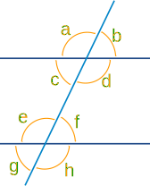
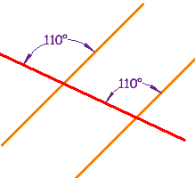
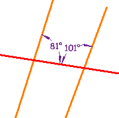
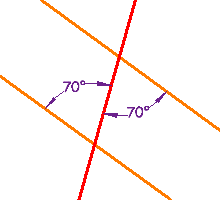

Parallel Lines, and Pairs of Angles
Parallel Lines
Lines are parallel if they are always the same distance apart (called "equidistant"), and will never meet. Just remember:
Always the same distance apart and never touching.
The red line is parallel to the blue line in each of these examples:
 |
 |
|
Example 1 |
Example 2 |
Parallel lines also point in the same direction.
Parallel lines have so much in common. It's a shame they will never meet!
Try it yourself:
Pairs of Angles

When parallel lines get crossed by another line (which is called a Transversal), you can see that many angles are the same, as in this example:
These angles can be made into pairs of angles which have special names.
Click on each name to see it highlighted:
Now play with it here. Try dragging the points, and choosing different angle types. You can also turn "Parallel" off or on:
Testing for Parallel Lines
Some of those special pairs of angles can be used to test if lines really are parallel:
|
 | ||||||||||||||||||||||
Examples
| These lines are parallel, because a pair of Corresponding Angles are equal. |  |
|  | These lines are not parallel, because a pair of Consecutive Interior Angles do not add up to 180° (81° + 101° =182°) |
| These lines are parallel, because a pair of Alternate Interior Angles are equal |  |